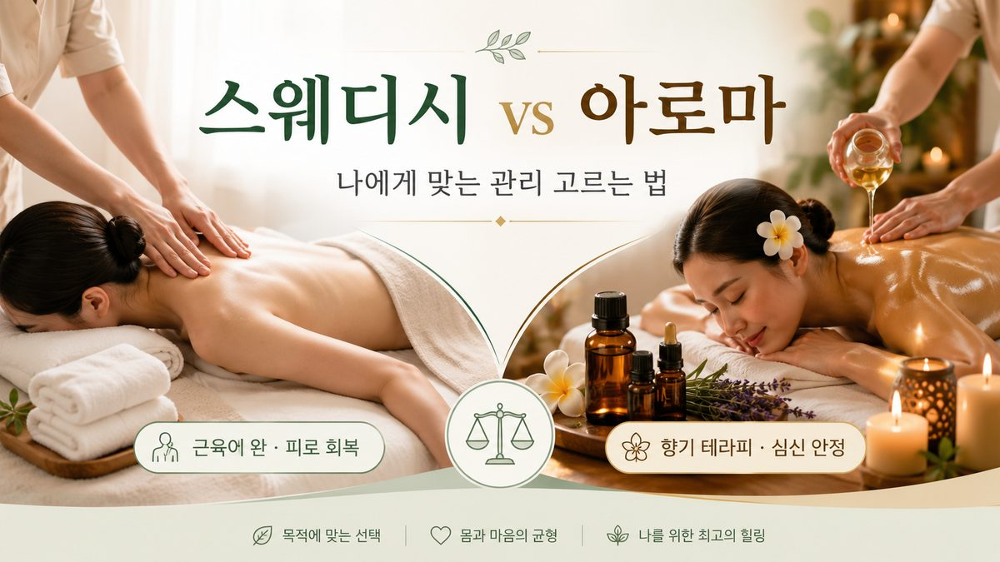

출장마사지를 처음 예약할 때 가장 많이 받는 질문이 “스웨디시랑 아로마, 뭐가 달라요?”입니다. 둘 다 부드러운 이완 관리라는 점은 같지만, 목적과 감각의 결, 그리고 끝난 뒤 남는 느낌이 다릅니다. 67 마사지 현장에서 두 코스를 매일 진행해 온 관리사들의 경험을 바탕으로, 광고 문구가 아니라 실제 받는 입장에서 무엇이 다른지 정리했습니다.
스웨디시는 손바닥과 전완으로 일정한 압을 주며 길게 쓸어내리는(에플라지) 동작이 핵심입니다. 근육 표층과 혈액·림프 순환을 자극해 ‘몸이 한결 가벼워졌다’는 감각을 줍니다. 자극의 세기보다 안정적인 리듬이 중요하기 때문에, 마사지 자체가 처음이거나 강한 압이 부담스러운 분께 무리가 적습니다. 현장에서 보면 종일 서서 일한 분, 오래 운전한 분, 잔뜩 부어 있는 분이 스웨디시 뒤 “다리가 풀렸다”는 반응을 가장 많이 보입니다.
아로마 테라피는 스웨디시의 손기술 위에 에센셜 오일의 향을 더한 코스입니다. 라벤더 계열은 진정, 시트러스 계열은 환기, 우디 계열은 안정처럼 그날의 컨디션에 맞춰 오일을 고릅니다. 촉각과 후각이 동시에 작동하기 때문에 ‘생각이 많아 잠이 안 온다’, ‘긴장이 머리끝까지 차 있다’는 분께 반응이 좋습니다. 다만 향은 취향과 컨디션을 크게 타므로, 두통이 있거나 향에 예민하면 미리 알려주셔야 역효과가 없습니다.
| 상황 | 추천 |
|---|---|
| 마사지가 처음이라 부담스럽다 | 스웨디시 |
| 몸이 무겁고 순환이 안 되는 느낌 | 스웨디시 |
| 스트레스·불면, 마음부터 풀고 싶다 | 아로마 |
| 특정 향을 좋아하거나 분위기를 중시 | 아로마 |
| 향·두통에 예민하다 | 스웨디시(또는 무향 아로마) |
두 코스 모두 정해진 정답 강도가 있는 게 아니라, 받는 사람에게 맞춰야 효과가 납니다. 예약할 때와 시작 직전에 ① 원하는 압(약·중·강), ② 집중 부위(목·어깨·허리·종아리 등), ③ 피하고 싶은 부위, ④ 컨디션(수면 부족·생리 중·음주 후 등)을 알려주시면 관리사가 그에 맞춰 조절합니다. 특히 음주 후 강한 압은 권하지 않으며, 이런 날은 약압 스웨디시가 안전합니다.
핵심은 “강하게”가 아니라 “나에게 맞게”입니다. 처음이라면 스웨디시로 내 몸의 반응을 본 뒤, 다음에 목적에 맞춰 아로마·딥티슈로 넓혀가는 순서를 추천합니다.
꼭 하나만 고를 필요는 없습니다. 현장에서 만족도가 높은 분들은 대개 컨디션에 따라 번갈아 받습니다. 몸이 무겁고 부은 주에는 스웨디시로 순환을 올리고, 야근·스트레스로 머리가 복잡한 주에는 아로마로 마음부터 가라앉히는 식입니다. 이렇게 목적에 맞춰 운영하면 ‘매번 같은 마사지’가 주는 둔감해짐 없이 효과를 유지할 수 있습니다.
아로마는 향뿐 아니라 오일 자체가 피부에 닿습니다. 평소 화장품 알레르기가 있거나 피부가 예민하다면 예약 시 알려주세요. 무향·저자극 베이스로 바꾸거나, 오일을 최소화한 스웨디시로 권해 드립니다. 등·가슴에 트러블이 잘 나는 분은 관리 후 가볍게 닦아내는 것만으로도 도움이 됩니다.
“강할수록 잘 받는 것”이라 여겨 무리하게 센 압을 요청했다가, 다음 날 근육통으로 고생하는 경우가 적지 않습니다. 반대로 ‘처음이라 뭘 말해야 할지 몰라’ 가만히 참다가 아쉽게 끝나는 분도 많습니다. 두 경우 모두 ‘지금 이 압이 어떤지’를 한마디 해주시는 것만으로 결과가 달라집니다. 마사지는 받는 사람과 관리사가 함께 맞춰가는 과정입니다.